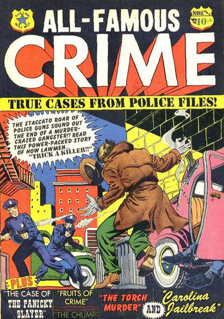
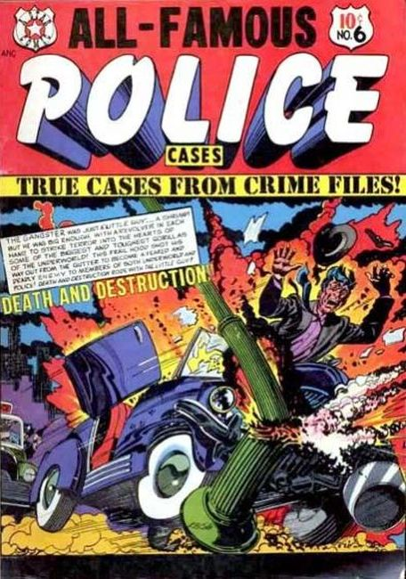
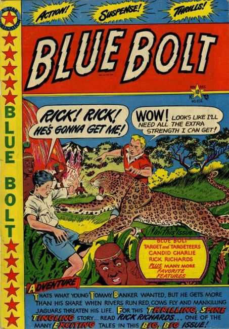
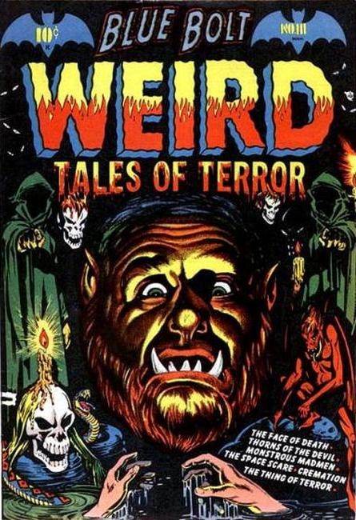
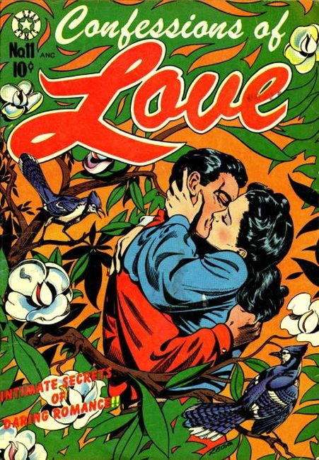
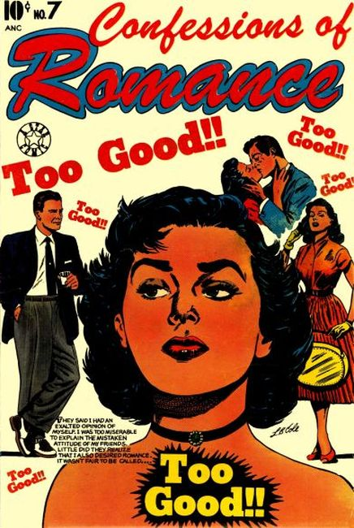

Star Publications
×






❮
❯
Formed in 1949 by Jerry Kramer and LB Cole.
Titles
All-Famous Crime (1951)
All-Famous Police Cases (1952)
Blue Bolt (1949)
Blue Bolt Weird Tales of Terror (1951)
Confessions of Love(1952)
Confessions of Romance(1953)
Crime Fighting Detective (1950)
Criminals on the Run (1949)
Dick Cole (1949)
Film Stars Romances (1950)
Flaming Western Romances (1950)
Four-Most Boys Comics (1949)
Frisky Animals (1951)
Frisky Fables (1949)
Fun Comics (1953)
Gasoline Alley (1950)
Ghostly Weird Stories (1953)
Holiday Comics (1951)
The Horrors (1953)
Indian Warriors (1951)
Indian Warriors 3-D (1953)
Intimate Secrets of Romance (1953)
Jungle Thrills (1952)
Jungle Thrills 3-D (1953)
Laughing It Up (1955)
Mighty Bear (1954)
The Outlaws (1952)
Picture Scope Jungle Adventures (1954)
Popular Teen-Agers (1950)
School-Day Romances (1949)
Shock Detective Cases (1952)
Shocking Mystery Cases (1952)
Spook (1953)
Sport Thrills (1950)
Startling Terror Tales (1952)
Super Animals (1953)
Target Western Romances (1949)
Terrifying Tales (1953)
Terrors of the Jungle (1952)
Thrilling Crime Cases (1950)
Top Love Stories (1951)
True-to-Life Romances (1949)
Unsane (1954)
Western Crime Cases (1951)
Western Fighters 3-D (1953)
White Rider and Super Horse (1950)
Zoo Animals (1954)

{kind=link}
{kind=link}
{kind=link}
{kind=link}
{kind=link}
{kind=link}